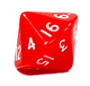

Maths
Just a bit of maths to show how readily Wang tiles can be programmed.
Corner to Edge Wang tile conversion
Any corner tileset can be converted into an equivalent edge tileset. This is done by replacing all combinations of two corner colors with a single edge color. For instance, to convert the following 2-color corner tileset, we will need to create a 4-color edge tileset, as there are 4 possible edge combinations.
| 0 | 1 | 2 | 3 | 4 | 5 | 6 | 7 | 8 | 9 | 10 | 11 | 12 | 13 | 14 | 15 |
If we denote an edge with
- two blue corners as blue
- two yellow corners as yellow
- a blue and yellow corner as green
- and a yellow and blue corner as purple
then we create the following equivalent 4-edge tileset. It is not complete, only 16 from a possible 256 edge combinations are used, as shown below.
| 0 | _ | _ | _ | _ | _ | _ | _ | _ | _ | _ | _ | _ | _ | _ | _ |
Here is a patch of 2-corner tiles converted to an equivalent 4-edge tileset.
It is not possible to use a similar technique to convert an edge to a corner tileset. Therefore, as corner tilesets can be converted, Wang tile theory often refers to edge tilesets only.
Weighting
Weighting allows a unique 'index' number to be derived from each combination of edges and/or corners. It is a common maths/programming technique.
2-edge or 2-corner tiles are weighted as binary 1, 2, 4, and 8. The weighting values are added for each (say yellow) and ignored for blue. This produces a unique index number between 0 and 15.
3-edge or 3-corner tiles are weighted as tertiary 1, 3, 9 and 27.
This produces a unique index number between 0 and 80.
|
|
Blob tilesets with two different colors are weighted 1, 2, 4, 8, 16, 32, 64 and 128. This produces a unique index number between 0 and 255.
I call the numbers 15, 80 and 255 the 'Highest Index Value', (HIV). Calculated by (2^n)-1, where n is the order of the tileset.
Bitwise, Modulo or Clock Arithmatic
As used in compass bearings and clocks. A system where numbers 'wrap around' upon reaching a certain value—the modulus. So turning 90° clockwise from a bearing of 315° gives 45°, as 315°+90° =405° =45° (mod 360).
To make full use of this powerful technique, it is important to label the tiles in a consecutive clockwise (or anti clockwise) manner.
A common convention is to start at the top and label clockwise. As used by the points of the compass (NSEW) and Cascading Style Sheets (top, right, bottom, left). Corner tiles start in the NorthEastern corner.
Complement of 2-order tiles
The complement of the index number produces an inverted (or complementary) tile, where colors are reversed. To calculate the complement, subtract the index number from the HIV. So tile 9 will become tile 15-9 = tile 6.
For higher order tiles, the weighting associated with each color can be cycled. So for an order 3 tileset, 0 is replaced by 1, 1 by 2 and 2 by 0. The new index is then calculated.
Calculating Tile Exits from Index Number
This is the reverse process of producing a unique index number from given edges or corners. Useful if a sprite is walking on a tile and needs to know if it can move forward off the tile.
Integer of (index / heading) and then mod 2.
So for instance, leaving to the west of tile-9 will give
int (9/8) mod 2 which equals 1, so an exit path exists.
Tile Rotation
To rotate a 2-order tile, multiply the index by 2 (mod 15). For a 3 order tile, multiply by 3 (mod 80). This also works for Blob 2 edge 2 corner tiles. Multiply by 2 for 45 degree rotation and by 4 for 90 degrees.
Dice
| If you're creating random tile layouts then don't try to pick random numbers yourself. If you're human you'll end up with discernable patterns or clumping. Try a 16 sided die like this (sold in pairs on ebay). |  |